유통관리사-2급 (2017-04-16 기출문제)
1과목: 유통물류일반
1. 유통경로관리에서 시장 관련 요인에 대한 설명으로 옳은 것은?
- 제조업자와 시장의 거리가 가까울수록 중간상 사용비용이 직접 유통비용보다 저렴할 가능성이 높아진다.
- 개별 소비자들의 수가 증가할수록 시장규모는 작아진다.
- 시장이 덜 집중되면 중간상이 사용될 가능성이 낮아진다.
- 시장 집중도가 높아지면 중간상이 배제될 가능성이 낮아진다.
- 집중도가 낮은 시장은 직접적인 마케팅 경로를 설계할 가능성이 낮다.
(정답률: 43%)

2. 소매수명주기이론의 단계별 특징과 전략적 시사점을 올바르게 나열한 것은?
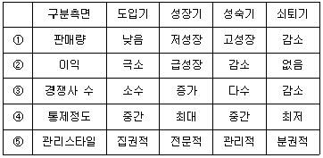
- ①
- ②
- ③
- ④
- ⑤
(정답률: 61%)
3. 조직의 구성과 관리 측면에는 계획, 조직화, 지휘, 통제 등의 관리 요소가 있다. 이 중 조직화에 해당되지 않는 것은?
- 자원 배분, 업무 할당, 목표 달성을 위한 절차를 구축하는 것
- 종업원에게 동기를 부여할 수 있는 업무를 할당하는 것
- 권한과 책임을 표시하는 조직구조를 설정하는 것
- 선발, 훈련, 직원역량을 개발하는 것
- 적재적소에 인재를 배치하는 것
(정답률: 49%)
4. 재무비율에 관한 내용으로 옳지 않은 것은?
- 순이익률은 '순이익/순매출액'으로 계산될 수 있다.
- 순이익률은 기업이 경영을 얼마나 잘하는지를 나타내지만, 주어진 매출수준에서 그 기업이 얼마나 자원을 잘 활용하고 있는지는 보여주지 않는다.
- 자산회전율은 '순매출액/총자산'으로 계산된다.
- 자산회전율은 자산을 얼마나 잘 활용하는지를 보여주는 지표가 되지만, 경영 효율성을 측정하는 적절한 수단이라고 보기는 어렵다.
- 자산이익률은 ROI로서, 이것이 경영 효율성을 측정하는 적절한 수단이라고 보기는 어렵다.
(정답률: 41%)
5. 어떤 기업에서 경제적 주문량모형을 이용하여 재고정책을 수립하려고 한다. 관련 자료가 아래와 같을 때 경제적 주문량 단위(A), 그 때의 연간 최적 주문횟수(B) 및 최적 주문주기일(C)을 올바르게 나열한 것은?
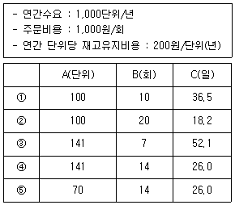
- ①
- ②
- ③
- ④
- ⑤
(정답률: 46%)
6. 유통경로에서 대형 유통업체들이 경로파워를 얻게 된 일반적인 배경으로 옳지 않은 것은?
- 유통업체들이 대형화, 다점포화 경쟁을 벌이면서 구매력을 확보하여 영향력이 증가하였다.
- 가격이 전략적 무기가 됨에 따라, 유통업체들이 규모의 경제를 추구하게 되었다.
- 많은 소비용품 시장이 성숙기에 들어섬에 따라, 제조업자들이 유통업체에게 이전보다 많고 다양한 판매촉진을 경쟁적으로 제공하였다.
- 유통정보기술의 발달로 인해 재고관리, 배송, 주문 등에서 기술혁신을 이뤄 효율적 경영이 가능해지고 가격경쟁력이 생겼다.
- 제조업체가 소비자와의 풍부한 거래 데이터를 축적·활용하여, 유통업체와 적극적으로 공유하기 시작하였다.
(정답률: 45%)
7. 마케팅 믹스 중 환경변화에 대응하거나 조정을 하여야 할 필요가 생겼을 경우, 가장 유연성 있게 대응하기 어려운 요소는?
- 가격
- 제품
- 촉진
- 유통경로
- 디자인
(정답률: 75%)
8. 다음 글 상자의 내용이 의미하는 것은?
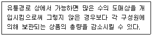
- 변동비 우위의 원리
- 분업의 원리
- 수직적 계열화의 원리
- 총거래수 최소의 원리
- 집중준비의 원리
(정답률: 41%)
9. 화물거점 시설까지 각 화주 또는 각 운송업자가 화물을 운반해 오고 배송면에서 공동화하는 유형의 공동 수·배송시스템은?
- 화주 중심의 집하배송공동형
- 운송업자 중심의 집하배송공동형
- 노선집하공동형
- 납품대행업
- 배송공동형
(정답률: 58%)
10. 물류관리 측면의 용어에 대한 설명으로 옳은 것은?
- 물류합리화 : 물류 비용과 서비스 수준 사이의 상충관계(trade-off)를 고려하여 그 수준을 적정하게 조정하여야 한다.
- 비용상쇄 : 재고유지비용을 줄이기 위해 최저 수준의 재고만 유지한다.
- 전체최적화 : 재고수준을 낮추어 재고보관비용을 감소시킨다.
- 총체적 시스템 : 유통경로상의 여러 기능 중 하나의 기능에 집중한다.
- 최적 고객서비스 : 주문편리성, 배송시간 등 실제 거래요소에만 집중한다.
(정답률: 65%)
11. 소매상의 기능으로 가장 옳지 않은 것은?
- 생산자, 도매상들이 소비자 가까이에서 접촉할 수 있게 인력과 점포를 제공한다.
- 소매상은 소비자에게 시장확대기능을 제공한다.
- 소매상은 소비자의 요구를 파악하여 공급선에 제공한다.
- 소매상은 공급선의 상품을 판매하기 위한 광고, 상품진열 등을 제공한다.
- 소매상은 상품구색에 대한 재고를 부담함으로써 공급선의 비용감소와 소비자의 구매편의를 돕는다.
(정답률: 52%)
12. 「전자상거래 등에서의 소비자보호에 관한 법률」에 따르면, 통신판매업자와 재화 등의 구매에 관한 계약을 체결한 소비자가 계약내용에 관한 서면을 받은 날부터 며칠 이내에 청약철회를 할 수 있는가?
- 5일
- 7일
- 10일
- 15일
- 30일
(정답률: 45%)
13. 상품매입과 관련된 법적, 윤리적 문제의 하나로써, 사고자 하는 상품을 구입하기 위해서 사고 싶지 않은 상품까지도 소매업체가 구입하도록 하는 공급업체와 소매업체간에 맺는 협정을 무엇이라고 하는가?
- 독점거래협정(exclusive dealing agreement)
- 역청구(chargebacks)
- 회색시장(gray-market)
- 역매입(buybacks)
- 구속적 계약(tying contract)
(정답률: 68%)
14. 보관창고의 기능을 크게 이동, 보관, 정보로 구분할 때, 이동과 관련된 하부활동과 가장 거리가 먼 것은?
- 상품분할(break bulk)
- 주문선택(order selection)
- 이송(transfer)
- 수주(receiving)
- 선적(shipping)
(정답률: 33%)
15. 공급망관리 시스템에 대한 설명으로 옳은 것은?
- 카테고리 매니지먼트 : POS 시스템을 통해 파악된 재고정보를 바탕으로 재고가 일정수준으로 떨어지면 컴퓨터가 이를 인지하여 자동으로 발주하는 시스템.
- 신속대응시스템 : 의류업계에서 리드타임 감소, 재고비용 감소, 판매의 증진 등 효과적 성과를 보인시스템.
- 효율적 고객대응시스템 : 유통업체 주도로 고객의 욕구에 기초하여 상품을 개발하고 유통하는 시스템.
- 협력적 계획, 예측 및 재고보충시스템 : 유통업체와 물류업체 간 협력적 의사결정하에 재고보충, 생산 및 판매과정 전반에 협력하는 시스템.
- 공급업체 주도 재고관리 : 유통업체의 정기적 주문에 따라 제조업체가 지속적으로 재고를 보충하는 시스템.
(정답률: 60%)
16. 경로집약도 중 '선택적 유통'에 대한 설명으로 가장 옳은 것은?
- 제조업자가 한 지역에 제한된 수의 점포들에게 판매권을 주는 형태이다.
- 유통업자에 대한 제조업자의 지배력이 강하다.
- 모든 제조업자의 상품을 제한 없이 취급하는 것이 특징이다.
- 브랜드의 가치를 유지하기 때문에 고가품에서 많이 볼 수 있는 유통형태이다.
- 화장품이나 자동차 유통에서 흔히 볼 수 있는 형태이다.
(정답률: 44%)
17. RFID(Radio Frequency Identification)가 유통물류에 제공하는 직접적인 효용으로 옳지 않는 것은?
- 제품이력관리 수월
- 생산품질의 향상
- 분실 및 멸실의 방지
- 모조품의 방지
- 품절의 감소
(정답률: 68%)
18. 유통경로구조이론 중 거래비용분석에서 시장 실패를 설명하는 가정이나 변수와 관련이 없는 것은?
- 거래의 반복발생빈도
- 불확실성
- 자산특유성
- 기회주의
- 제품고객화
(정답률: 49%)
19. 「 유통산업발전법」제3조 유통산업시책의 기본방향으로 옳지 않은 것은?
- 유통산업의 지역별 균형발전의 도모
- 유통산업의 국제경쟁력 제고
- 유통산업에서의 건전한 상거래질서의 확립 및 공정한 경쟁여건의 조성
- 유통산업에서의 구성원 편익의 증진
- 유통산업의 종류별 균형발전의 도모
(정답률: 53%)
20. 다음 글 상자 안의 ㄱ∼ㅂ은 물류시스템 설계에 대한 전략적 계획절차를 순서 없이 나열한 것이다. 올바른 순서대로 나열한 것은?
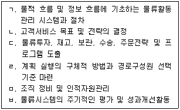
- ㄴ → ㄱ → ㄷ → ㄹ → ㅂ → ㅁ
- ㄴ → ㄷ → ㄱ → ㅁ → ㄹ → ㅂ
- ㄴ → ㅁ → ㄹ → ㄱ → ㄷ → ㅂ
- ㄴ → ㄹ → ㄱ → ㄷ → ㅂ → ㅁ
- ㄴ → ㄷ → ㄹ → ㄱ → ㅂ → ㅁ
(정답률: 40%)
21. 다음 글 상자에서 설명하고 있는 경로파워 원천은?
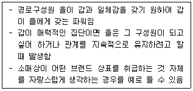
- 보상적 파워
- 준거적 파워
- 강압적 파워
- 전문적 파워
- 합법적 파워
(정답률: 75%)
22. 목표에 의한 관리(MBO)에서 목표를 수립할 때 주의할 점으로 가장 옳지 않은 것은?
- 능력범위 이내라면 목표의 난이도는 약간 어려운 것이 좋다.
- 피드백은 업무가 완성된 후에 한꺼번에 하는 것이 효과적이다.
- 목표설정 과정에서 당사자가 함께 참여할수록 좋다.
- 목표는 기간, 범위 등이 구체적으로 정해져야 효과적이다.
- 일방적으로 지시한 것보다 업무담당자가 동의한 목표가 좋다.
(정답률: 74%)
23. 물류관리의 목표를 표현하고 있는 물류의 7R원칙에 해당하지 않는 것은?
- 적정 상품(right commodity)
- 적정 품질(right quality)
- 적정 가격(right price)
- 적정 도구(right instrument)
- 적정 수량(right quantity)
(정답률: 79%)
24. 공급사슬에서 나타날 수 있는 채찍효과를 극복하는 방법으로 옳은 것은?
- 잦은 가격정책의 변화
- 대량 일괄 주문
- 유통주체간의 독립성 강화
- 공급사슬상의 수요 및 재고정보 공유
- 각 유통단계별 개별적 수요예측
(정답률: 65%)
25. 부품이나 완제품의 조달에서 시작하여 완제품의 판매에 이르기까지의 모든 과정에서 발생하는 물류기능의 전체 혹은 일부를 전문 물류업체가 화주업체로부터 위탁을 받아 수행하는 물류활동을 무엇이라고 하는가?
- 회수 물류
- 통합적 로지스틱스
- 상적 물류
- 제3자 물류
- 조달 물류
(정답률: 76%)
2과목: 상권분석
26. 복수의 입지후보지를 대상으로 조사할 때, 상권규모에 영향을 미치는 변수들을 통해 상대적인 매력도를 비교할 수 있지만 구체적인 숫자로 매출액을 추정하기는 어려운 상권분석 기법은?
- 허프(Huff)모델
- 체크리스트법
- 회귀분석법
- 유사점포법
- MNL모델
(정답률: 65%)
27. 이용목적이나 공간균배의 원리에 의해 입지의 유형을 설명하였다. ( )안의 입지유형으로 옳은 것은?
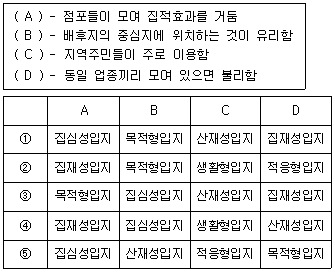
- ①
- ②
- ③
- ④
- ⑤
(정답률: 76%)
28. 넬슨(Nelson)의 소매입지 선정원리에 해당하는 용어를 설명하였다. ( A ), ( B )안에 들어갈 용어를 올바르게 짝지은 것은?
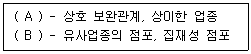
- A : 누적적 흡인력, B : 상권의 잠재력
- A : 상권의 잠재력, B : 경합의 최소성
- A : 양립성, B : 경합의 최소성
- A : 양립성, B : 누적적 흡인력
- A : 누적적 흡인력, B : 양립성
(정답률: 71%)
29. 상품구매를 위해 점포까지 이동하는 동선을 분석할 때는 통행자의 심리상태를 이해하는 것이 중요하다. 다음 중 동선과 관련하여 소비자의 심리를 나타내는 대표적 법칙으로 옳지 않은 것은?
- 최단거리실현의 법칙
- 보증실현의 법칙
- 안전중시의 법칙
- 집합의 법칙
- 객체지향의 법칙
(정답률: 48%)
30. 서로 경합하는 초광역쇼핑센터들의 상권을 설정할 때, 수집해야 하는 자료의 양과 투입비용의 측면에서 가장 합리적으로 활용할 수 있는 모델(이론)은?
- 허프(Huff)의 확률모델
- 허프(Huff)의 수정모델
- 컨버스(Converse)의 제1법칙
- 넬슨(Nelson)의 입지이론
- 호텔링(Hotelling)의 최소분화원리
(정답률: 32%)
31. 상권은 다각형의 형태를 가진다. 아래 박스에서 지역상권의 형태를 결정할 수 있는 요인만을 올바르게 나열한 것은?
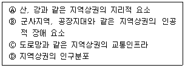
- Ⓐ
- Ⓐ, Ⓑ
- Ⓐ, Ⓒ
- Ⓐ, Ⓑ, Ⓒ
- Ⓐ, Ⓑ, Ⓒ, Ⓓ
(정답률: 75%)
32. 예술, 패션, 음악, 디자인, 카페 등을 함께 판매하는 문화 공간형 복합매장의 입지를 물색하고 있는 소매점에게 가장 가치 있는 상권정보는?
- 상권 내 소비자들의 가구 구성
- 상권 내 소비자들의 라이프스타일
- 상권 내 소비자들의 연령 분포
- 상권 내 소비자들의 소득 분포
- 상권의 고용 상황
(정답률: 72%)
33. 상권분석에 다양한 정보를 활용할 수 있는 GIS(Geographic Information System) 등에서 특정 점포를 이용하는 고객들의 거주지를 지도상에 표시하는 CST(Customer Spotting Technique) 기법을 통해 수행할 수 있는 과업들을 올바르게 나열한 것은?
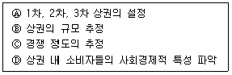
- Ⓐ
- Ⓐ, Ⓑ
- Ⓐ, Ⓑ, Ⓒ
- Ⓐ, Ⓑ, Ⓓ
- Ⓐ, Ⓑ, Ⓒ, Ⓓ
(정답률: 45%)
34. 점포 출점을 결정한 후 가장 먼저 준비해야 할 사항은?
- 점포의 포지셔닝 주제(아이덴티티)의 설정
- 종업원의 선발 및 교육‧훈련
- 거래처와의 교섭
- 점포의 인테리어공사
- 홍보 계획 수립
(정답률: 75%)
35. 점포입지는 점포들의 집적 정도에 따라 단독입지와 군집입지로 나눌 수 있다. 입지의 매력도에 영향을 미치는 현상에 관한 다음 원칙들 가운데 군집입지의 매력도를 낮추는 것과 관련된 원칙은 무엇인가?
- 고객차단의 원칙(principle of interception)
- 동반유인의 원칙(principle of cumulative attraction)
- 보충가능성의 원칙(principle of compatibility)
- 점포밀집의 원칙(principle of store congestion)
- 접근가능성의 원칙(principle of accessibility)
(정답률: 48%)
36. 소매점포고객을 배후상권거주고객, 직장·학교고객, 유동고객으로 구분할 수도 있다. 점포에 따른 고객 구성에 대한 내용으로 옳은 것은?
- 광역쇼핑센터의 고객은 대부분 유동고객이다.
- 중심상업지구의 고객은 대부분 직장·학교고객이다.
- 학교 앞 문방구 입지의 고객은 유동고객이다.
- 관광지 쇼핑센터의 고객은 배후상권거주고객과 유동고객이 균등하게 섞여있다.
- 근린 쇼핑센터의 고객은 대부분 배후상권거주고객이다.
(정답률: 44%)
37. 도시의 공간구조는 도심, 부도심, 주거지, 산업지구, 교외 등으로 계층을 이루며 이에 따라 도시의 상권도 계층구조를 갖는다. 상업입지들 가운데 공간구조의 특징 때문에 쇼핑센터를 계획적으로 개발하기 가장 어려운 것은?
- 도심 쇼핑센터
- 부도심 쇼핑센터
- 주거지 인근 상점가
- 교외 광역쇼핑센터
- 교외 파워쇼핑센터
(정답률: 54%)
38. 입지를 선정할 때 취급상품의 물류비용을 고려할 필요성이 가장 낮은 도매상은?
- 산업재 도매상
- 현금거래 도매상
- 제조업자 도매상
- 트럭도매상
- 브로커(broker)
(정답률: 67%)
39. 소매점이 집적하게 되면 경쟁과 양립의 서로 다른 성격을 갖게 되므로 가능하면 양립(兩立)을 통해 상호이익을 추구하는 것이 좋다. 다음 중 양립의 원인으로 옳지 않은 것은?
- 보충효과
- 집적효과
- 상승효과
- 차단효과
- 차별화효과
(정답률: 57%)
40. 상권분석에서 점포선택과 소매상권의 크기를 파악하기 위해 사용되는 허프(Huff)모형에 대한 설명으로 볼 수 없는 것은?
- 허프(Huff)모형은 확률적 상권분석 모형이다.
- 특정점포에 대한 효용은 점포크기와 점포까지의 거리에 의해 좌우된다.
- 소비자와 점포와의 물리적 거리는 시간거리로 대체하여 계산하기도 한다.
- 거리에 대한 민감도계수는 상권이나 소비자 개인을 불문하고 고정되어 적용된다.
- 특정점포의 효용이 경쟁점포보다 클수록 그 점포가 선택될 가능성이 높다고 가정한다.
(정답률: 68%)
41. 확률적 상권분석 기법들이 이론적 근거로 활용하고 있는 Luce의 선택공리와 관련이 없는 것은?
- 레일리(Reilly)의 소매중력모형
- 허프(Huff) 모형
- 수정 허프(Huff) 모형
- MCI 모형
- MNL 모형
(정답률: 57%)
42. 상권분석 방법들 중에서 특정 입지의 매력도를 점수로 평가할 수는 있지만 매출액을 추정하기 어려운 방법은?
- 체크리스트법
- 유추법
- 허프 모델
- 수정 허프 모델
- 회귀분석법
(정답률: 69%)
43. 실무적인 입장에서 볼 때 상권분석의 목적이라고 보기 어려운 것은?
- 임대료 평가 기준 마련
- 지역내 가구수 파악
- 매출추정의 근거 확보
- 업종 선택의 기준 마련
- 마케팅 전략 수립에 활용
(정답률: 44%)
44. 상권이나 입지에 관한 내용으로 가장 옳은 것은?
- 상권은 점포의 위치나 위치적 조건을 의미하는 개념이다.
- 지점(point), 부지(site)는 상권을 표현하는 주요한 키워드이다.
- 입지는 점포의 유효수요 분포 공간으로 인식된다.
- 점포면적, 가시성, 주차시설은 입지의 평가항목에 포함된다.
- 입지는 '어떤 지역에 밀집한 점포집단의 영향권'을 의미하기도 한다.
(정답률: 52%)
45. 상권분석에 허프(Huff)모델을 적용할 때, 상대적으로 설명력이 떨어질 가능성이 가장 큰 분석대상은?
- 전문 오디오제품
- 슈퍼마켓
- 약국
- 문구점
- 패스트푸드점
(정답률: 67%)
3과목: 유통마케팅
46. 유통업체가 PB를 활용한 예로 가장 적절하지 않는 것은?
- 편의점이 점포명을 생수 상표명으로 사용
- 백화점이 새로운 상표명을 개발
- TV홈쇼핑이 독점계약 하에 디자이너명을 속옷 브랜드로 사용
- 대형마트가 라이센스 하에 유명인 이름을 사용한 의류브랜드 출시
- 인터넷 쇼핑몰이 해외 제조업체 브랜드 직수입, 판매
(정답률: 57%)
47. 기업형 VMS(Vertical Marketing System)에 해당하는 것은?
- A패스트푸드 매장에서 B사의 콜라를 판매하는 것
- 여러 항공사들이 좌석을 공동으로 운항하는 것
- 커피믹스로 유명한 C식품회사가 글로벌 커피샵체인 D회사와 제휴하여 병커피를 생산하는 것
- 닭고기를 생산, 가공하는 E사가 닭고기 판매업체인 F사를 인수하여 운영하는 것
- G편의점에서 H택배 접수 서비스를 제공하는 것
(정답률: 52%)
48. 수직적 마케팅 시스템의 한 유형인 관리형 경로에서 도·소매상이 얻을 수 있는 혜택으로 옳지 않은 것은?
- 공급자가 일괄적으로 광고를 하므로 광고성과와 광고효율성이 높다.
- 상품의 적기, 적량 확보가 가능하다.
- 상품구색 계획과 조정에 대해 조언을 받을 수 있다.
- 필요한 재고량 예측의 정확성이 높아질 수 있다.
- 주문기능을 공급자에게 이동시킴으로써 비용이 절감될 수 있다.
(정답률: 34%)
49. 재고투자수익률(GMROI)에 대한 설명으로 가장 옳지 않은 것은?
- Gross Margin Return On Inventory Investment를 의미한다.
- 상품의 총이익을 그 상품의 평균재고금액으로 나눈 값이다.
- 평균재고금액은 매입원가, 소매가격 또는 시장가격을 사용하여 계산한다.
- 상품의 재고회전율보다 총마진율이 재고투자수익률에 미치는 영향이 항상 더 크다.
- 상이한 품목, 상품계열, 부문(department)들의 성과를 비교하는데 사용할 수 있다.
(정답률: 45%)
50. 민속지학적 조사(ethnographic research)에 대한 설명으로 가장 옳지 않은 것은?
- 자연스러운 환경에서 소비자를 관찰하는 조사방법이다.
- 1차 자료를 수집하기 위한 조사방법이다.
- 가설검증을 위한 정량분석에 필요한 자료의 수집에 적합한 조사방법이다.
- 실험조사(experimental research)에 비해 내적타당성이 낮은 조사방법이다.
- 연구대상의 배경과 정보원들에게 문화적으로 동화되거나 거짓된 정보를 얻을 수 있다는 단점도 있다.
(정답률: 31%)
51. 원가가산 가격결정법을 사용하여 상품 가격을 결정하는 소매점이 있다. 어떤 상품의 매출상품원가가 120,000원, 순매출액 150,000원이었다. 단위당 매출상품원가가 100원인 상품에 대해 이 소매점이 책정할 가격은 얼마인가?
- 110원
- 115원
- 120원
- 125원
- 130원
(정답률: 36%)
52. 서비스 품질을 개선하기 위해서는 구체적인 관리대상에 대해 측정가능한 품질 목표를 설정해야 한다. 다음 중 소매점의 서비스 품질 개선을 위한 측정가능한 관리 목표로서 가장 적절한 것은?
- 주기적으로 모든 상품의 변형을 바로 잡을 것
- 어떤 고객이든 매장에 들어서면 바로 응대를 시작할 것
- 새로 입고된 모든 상품은 하역장 도착 후 24시간 안에 진열대에 전시할 것
- 모든 고객불평에 대해 긍정적으로 반응할 것
- 고객이 구입한 의류의 수선을 요구하면 최대한 빨리 수선해줄 것
(정답률: 44%)
53. 유통업체 브랜드의 하나로 '선도적인 제조업체 브랜드의 상호나 상품 특성 등을 매우 흡사하게 모방한 브랜드'에 해당하는 것은?
- 저가 브랜드
- 공동 브랜드
- 고품격 프리미엄 브랜드
- 유사 브랜드
- 하우스 브랜드
(정답률: 69%)
54. '상품 취급 상 소홀'로 인하여 상품이 훼손되는 등의 상품가치를 잃어버리는 로스에 해당하는 것은?
- 상품정책상의 로스
- 상품보존상의 로스
- 업무처리상 실수로 인한 로스
- 부정에 의한 로스
- 상품 구색의 로스
(정답률: 58%)
55. 중간상이 제조업자를 위해 지역광고를 하거나 판촉을 실시할 경우 이를 지원하기 위해서 제조업체가 지급하는 보조금은?
- 거래할인
- 현금할인
- 수량할인
- 계절할인
- 판매촉진지원금
(정답률: 68%)
56. 점포의 이미지를 측정하기 위한 설문이다. 이 설문에 사용된 척도의 유형은?
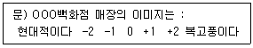
- 리커트척도
- 어의차이척도
- 총합고정척도
- 등급척도
- 스타펠척도
(정답률: 45%)
57. 묶음가격에 대한 설명으로 옳지 않은 것은?
- 개별상품에 대하여 단독으로는 판매되지 않는 순수묶음제와 단독판매와 묶음판매 모두 가능한 혼합묶음제로 나눌 수 있다.
- 주로 대체재끼리 묶어서 저렴한 가격으로 책정하여 판매함으로써 판매량을 늘린다.
- 두 가지 이상의 제품-제품, 제품-서비스, 서비스-서비스 등을 패키지로 묶어서 가격을 책정하는 것을 말한다.
- 묶음가격을 책정할 때는 각 상품의 준거가격 수준을 충분히 고려하여야 한다.
- 소비자는 보다 저렴한 가격으로 다양한 제품이나 서비스를 구매할 수 있다.
(정답률: 49%)
58. 다음 사례는 상품 카테고리 수명주기에 대해 설명한 것이다. 옳지 않은 것은?
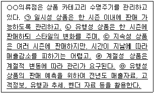
- ㉠
- ㉡
- ㉢
- ㉣
- ㉤
(정답률: 37%)
59. 유통환경의 내부환경분석으로 옳은 것은?
- 고객의 구매편의성 증대로 소매점포수 확대나 적정 재고유지가 중요해졌다.
- 새롭게 등장하는 소매업태가 무엇인지, 적절히 분석하고 대응해야 한다.
- 자사의 성과를 분석할 경우에는 유동성비율, 재무적 건실도 등을 포함한다.
- 원재료 공급업자의 가격정책을 주시한다.
- 좁은 의미의 경쟁자는 직접 경쟁 업태이지만, 넓게 보면 할인점도 백화점의 경쟁상대가 될 수 있다.
(정답률: 47%)
60. 다음 글 상자 안에서 설명하는 발주방식은?
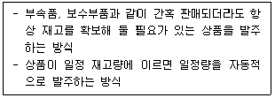
- 정기발주법
- 정량유지법
- 경제적 발주량
- 정시발주법
- 상황발주법
(정답률: 54%)
61. A숙녀복전문점에서 소비자들이 제기한 글 상자 안의 불만사항 중에서, 상품등급 구성에 관련된 불만이라고 볼 수 있는 것은?
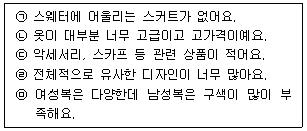
- ㉠
- ㉡
- ㉢
- ㉣
- ㉤
(정답률: 60%)
62. 소매점에서 사용하는 일반적인 상품분류기준이라고 보기 어려운 것은?
- 한국표준산업분류표를 중심으로 한 분류
- 고객을 중심으로 한 분류
- 용도를 중심으로 한 분류
- 대체재, 보완재를 중심으로 한 분류
- 소비패턴을 중심으로 한 분류
(정답률: 54%)
63. 다음 글 상자 안의 내용들을 특징으로 갖는 백화점의 매입방식은?
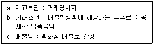
- 직매입
- 특정(특약)매입
- 임대(갑)
- 임대(을)(수수료)
- 기획매입
(정답률: 42%)
64. 다음 사례의 내용 중 상품라인의 확장에 따른 문제점을 진단한 것으로 옳지 않은 것은?
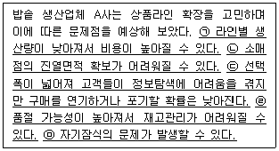
- ㉠
- ㉡
- ㉢
- ㉣
- ㉤
(정답률: 48%)
65. 촉진믹스를 개발할 때 고려해야 할 요인에 대한 설명으로 옳지 않은 것은?
- 산업재를 판매하는 기업은 일반적으로 다른 촉진방법보다 인적판매에 더 많은 촉진비용을 지출하는 경향이 높다.
- 소비재를 판매하는 기업은 일반적으로 광고, 판매촉진, 인적판매, PR 순으로 촉진비용을 지출하는 경향이 높다.
- 푸쉬(push)전략은 유통업자가 최종 소비자에게 촉진활동을 하는 것이고, 풀(pull)전략은 제조업자가 유통업자에게 인적판매 등을 수행하는 것을 말한다.
- 구매자가 인지와 지식단계일 경우 광고가 중요하고, 선호나 확신단계로 가면 인적판매가 더 중요해진다.
- 제품수명주기가 도입기 단계일 경우 광고와 PR이 인지도 향상에 효과적이고, 샘플과 같은 판매촉진은 초기 시험구매 단계에 유용하다.
(정답률: 54%)
66. 다음 사례에서 소비자를 대상으로 하는 비가격형 판촉에 해당하지 않는 것은?
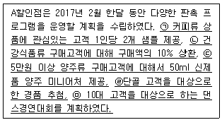
- ㉠
- ㉡
- ㉢
- ㉣
- ㉤
(정답률: 59%)
67. 과일이나 야채와 같은 상품들을 매대나 바구니 등에 쌓아놓는 방법으로 고객에게 저렴하다는 인식을 줄 수 있고 충동구매를 유발하며 저가격과 저마진 상품에 어울리는 진열방법은?
- 전진입체진열
- 박스커트진열
- 벌크진열
- 돌출진열
- 후크진열
(정답률: 59%)
68. 최근 소매상이 직면한 환경변화의 내용으로 옳지 않은 것은?
- 모바일 및 소셜 중심의 옴니채널(omni-channel)이 확대되고 있다.
- 고마진-저회전 추구 소매상과 저마진-고회전 추구 소매상으로 양극화 현상이 심해지고 있다.
- 소매상들은 점점 유통업체 브랜드의 역할을 확대하고 있다.
- 패키지 소비상품 경로에서 제조업체들이 파워를 강화하고 있다.
- 편의성과 점포 포지셔닝의 중요성이 증가하고 있다.
(정답률: 45%)
69. 아래의 빈 칸에 들어갈 용어로 올바르게 짝지어진 것은?
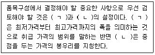
- ㄱ : 품목 레벨 ㄴ : 품종
- ㄱ : 상품군 레벨 ㄴ : 품목 레벨
- ㄱ : 프라이스 존 ㄴ : 품종
- ㄱ : 프라이스 존 ㄴ : 프라이스 라인
- ㄱ : 품목 레벨 ㄴ : 프라이스 라인
(정답률: 65%)
70. 소비재 시장에서 주로 사용하는 세분화 변수 중 행동적 변수(behavioral variables)에 해당하지 않는 것은?
- 가족생애 주기
- 사용률
- 충성도 수준
- 사용상황
- 추구 편익
(정답률: 52%)
4과목: 유통정보
71. ( )안에 들어갈 용어로 가장 옳은 것은?
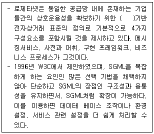
- HTML
- XML
- SML
- Python
- Java
(정답률: 40%)
72. ( ) 안에 들어갈 용어로 가장 옳은 것은?
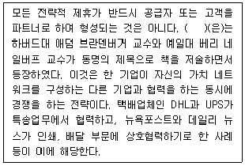
- 코피티션
- 카르텔
- 파트너쉽
- 인소싱
- 아웃소싱
(정답률: 43%)
73. 파괴적(Disruptive) 기술에 대한 설명으로 가장 옳은 것은?
- 좀 더 빠른 자동차, 좀 더 대용량의 하드디스크와 같이 이전보다 더 나은 기술적 진보를 이루어 내는 기술을 지칭한다.
- 기존에 시도하지 않았던 새로운 방식으로 일을 처리하거나 새로운 제품이나 서비스를 이끌어내는 기술을 지칭하는 것으로 최근의 사물인터넷, 빅데이터 등이 대표적인 사례이다.
- 기존 고객이 요구를 만족시켜주어 기존 시장을 확고히 이끌어 나가도록 지원하는 기술을 지칭한다.
- 일반적으로 새로운 시장을 개척하면서 기존 시장의 가치를 보존시켜 주는 역할을 한다.
- 기존의 시장에서 더 질 높고, 신속하며, 저렴한 상품을 공급하는 경향이 있다.
(정답률: 55%)
74. 데이터베이스 관리시스템(DBMS)의 장점으로 가장 옳지 않은 것은?
- 데이터의 중복을 실시간으로 방지해 주고, 운영비가 감소하게 된다.
- 다수의 사용자와 응용 프로그램들이 데이터를 공유하는 것이 가능하도록 지원한다.
- 데이터 간의 불일치가 발생하지 않도록 하여 데이터의 일관성을 유지할 수 있다.
- 데이터베이스의 접근 권한이 없는 사용자로부터 데이터베이스의 모든 데이터에 대한 보안을 보장한다.
- 데이터베이스에 저장된 데이터 값과 실제 값이 일치하도록 함으로써 무결성을 유지한다.
(정답률: 34%)
75. 어느 배너 광고의 임프레션(impression)이 하루 동안 5만 번 발생했고 CPM(Cost per impression)이 2만원으로 책정된 경우 총광고료는 얼마인가?
- 1,000만원
- 500만원
- 100만원
- 10억원
- 1억원
(정답률: 24%)
76. POS 시스템의 도입으로 소매업체의 입장에서 얻을 수 있는 효과로 가장 옳지 않은 것은?
- 오류등록의 방지 및 특매가격에서 통상가격으로의 환원이 용이하다.
- 자료의 교차분석으로 경쟁상품과의 판매경향을 비교·분석할 수 있다.
- 상품구색의 적정화에 따른 매출 증대를 꾀할 수 있다.
- 품절의 사전 방지로 매출액을 신장시킬 수 있다.
- 사장품의 발견과 제거가 용이하다.
(정답률: 34%)
77. 다음은 해킹 기법의 일종으로 무엇에 관한 설명인가?
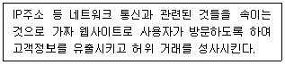
- 스푸핑(spoofing)
- 스니핑(sniffing)
- 훼일링(whaling)
- 스패밍(spamming)
- 피싱(Phishing)
(정답률: 42%)
78. 송신자와 수신자가 동일 비밀키를 이용해 메시지를 암호화 및 보호화 하는 방식으로 가장 옳은 것은?
- Rabin 암호화 방식
- ECC(Elliptic Curve Cryptography) 암호화 방식
- DES(Data Encryption Standard) 암호화 방식
- RSA(Rivest Shamir Adleman) 암호화 방식
- McElieced 암호화 방식
(정답률: 51%)
79. 온라인에 특화된 마케팅 기법에 대한 설명으로 가장 옳지 않은 것은?
- 퍼미션 마케팅(Permission Marketing) : 소비자와의 장기적인 대화식 접근법으로 소비자를 자발적으로 마케팅과정에 참여하게 하는 것이다.
- 버즈 마케팅(Buzz Marketing) : 하나의 웹사이트가 다른 웹사이트에게 그 사이트를 소개함에 따라 새로운 비즈니스 기회를 갖는 것에 대한 커미션을 지불하기로 동의하는 것이다.
- 바이러스 마케팅(Virus Marketing) : 온라인 버전의 구전마케팅으로 고객들이 기업의 마케팅메시지를 친구, 가족 혹은 동료들에게 전달하면서 새로운 고객을 확대하는 것이다.
- 블로그 마케팅 (Blog Marketing) : 판매를 목적으로 하는 광고뿐만 아니라 판매를 직접적인 목적으로 하지 않는 브랜드 광고를 게재하는 데 활용하는 것이다.
- 소셜 네트워크 마케팅 (Social Network Marketing) : 온라인 커뮤니티를 통해 마케팅 활동을 하는 것이다.
(정답률: 53%)
80. 2차원의 인식코드로 가장 거리가 먼 것은?
- Maxi코드
- QR코드
- Code 128
- Data Matrix
- PDF417
(정답률: 40%)
81. 대용량의 데이터베이스로부터 데이터를 분석하는 기법인 데이터 마이닝 과정을 예를 들어 설명한 것으로 가장 옳지 않은 것은?
- 연관성 - 시리얼을 구입한 고객의 70%가 우유를 구입한다.
- 군집 - 배낭을 구입한 고객은 얼마 후 코펠을 구입한다.
- 분류 - 부도가 나는 고객의 특징은 수입에 비하여 카드 사용 비용이 높다.
- 상관관계 - 날씨가 더울수록 에어컨의 판매량이 많다.
- 추세 - 새로운 특정상품 판매량의 시계열 경향이 있다.
(정답률: 52%)
82. 데이터 가치분석 측면에서 볼 때, 빅 데이터의 효용가치로 가장 옳지 않은 것은?
- 표본 추출된 데이터 분석이 아닌 전수분석이 이루어지면서 정보의 왜곡이 줄어든다.
- 데이터의 양이 커지면서 작은 데이터에서는 사용할 수 없었던 새로운 데이터 분석 기법을 적용할 수 있다.
- 다양한 변수 사이의 새로운 관계를 발견한다.
- 고객의 형태가 여과 없이 담겨있는 생생한 정형화된 데이터가 핵심이 된다.
- 사건 발생 시점과 데이터 감지 시점 사이의 지연이 거의 없어 실시간 나우캐스팅 (nowcasting)이 가능하다.
(정답률: 43%)
83. ( 가 ), ( 나 )에 들어갈 가장 적절한 SCM 전략은?
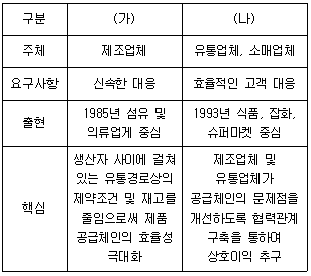
- (가) QR, (나) ECR
- (가) QR, (나) CRP
- (가) QR, (나) CAO
- (가) ECR, (나) CAO
- (가) CAO, (나) ECR
(정답률: 57%)
84. 쿠키(cookie)로부터 파악할 수 있는 정보가 아닌 것은?
- 회원정보
- 사용한 컴퓨터 서버
- 사용한 컴퓨터 사양
- 서치(search) 정보
- 상품 구매정보
(정답률: 63%)
85. 지식경영시스템에 대한 설명으로 가장 옳지 않은 것은?
- 공동의 지식창고를 구축할 수 있는 컴퓨터정보시스템이 필요하다.
- 지식의 검색 및 수정기능이 있어야 한다.
- 지식 디렉토리를 만들어 사용자들이 특정 분야의 전문가를 찾을 수 있도록 해야 한다.
- 기업 경쟁의 무기인 지식은 구성원들이 개별적으로 보유하거나 특정 장소에 엄격하게 보관되어 있어야 한다.
- 지식오염을 막기 위해 지식경영 책임자나 지식창조 관리자들은 시스템에 확보된 정보가 정확하고 유용한지를 확인하는 관리가 필요하다.
(정답률: 60%)
86. 1995년 노나카와 다케우치가 주장한 지식변환의 네가지 방식과 가장 거리가 먼 것은?
- 사회화는 경험을 공유하고 이에 따라 사고모형이나 기량과 같은 암묵지를 창조해 내는 과정이다.
- 도제 장인의 기술을 관찰하고, 모방하고 연습함으로서 장인의 솜씨를 배우는 것은 전형적인 내면화 과정이다.
- 암묵지를 형식지로 표현하는 과정을 외부화라 한다.
- 형식지들을 체계적으로 조직하여 지식체계에 통합시키는 과정을 종합화라 한다.
- 데이터베이스나 컴퓨터 네트워크는 종합화를 하는데 훌륭한 도구이다.
(정답률: 46%)
87. ( ) 안에 들어갈 가장 적절한 용어는?
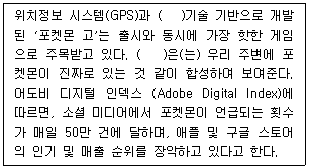
- 증강현실
- 사이버실증
- 모션임팩트
- 인공지능
- 딥러닝
(정답률: 68%)
88. QR(Quick Response)시스템에서 점포에 그대로 진열할 수 있도록 행거(hanger) 설치와 가격 태그(tag)가 부착된 상품이 물류센터를 경유하지 않고 공장으로부터 소매점포로 직접 보내는 것을 지칭하는 용어는?
- ECR(Efficient Consumer Response)
- EDI(Electronic Data Interchange)
- FRM(Floor Ready Merchandise)
- ASN(Advanced Shipping Notice)
- ABC(Activity Based Cost)
(정답률: 51%)
89. 제4차 산업혁명시대의 특징에 대한 설명으로 가장 옳지 않은 것은?
- 2016년 세계 경제 포럼(WEF; World Economic Forum)에서 화두로 등장하였다.
- 디지털 혁명에 기반하여 물리적 공간, 디지털적 공간 및 생물학적 공간의 경계가 더욱 더 명확해지게 되어 이들 간의 기술 융합을 통한 새로운 공간 생성 시대가 도래하였다.
- 과학기술적 측면에서 '모바일 인터넷', '클라우드 기술', '빅데이터', '사물인터넷(IoT)' 및 '인공지능(A.I.)' 등이 주요 변화 동인으로 꼽히고 있다.
- '초연결성(Hyper-Connected)', '초지능화(HyperIntelligent)라는 특성을 가진다.
- 제4차 산업혁명이 가까운 미래에 도래할 것이고, 이로 인해 일자리 지형변화와 사회구조적 변화가 일어날 것으로 전망되고 있다.
(정답률: 56%)
90. ( ) 안에 들어갈 용어로 가장 옳은 것은?
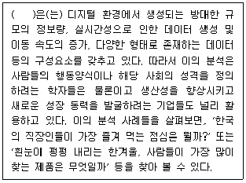
- On-demand
- Big data
- IoT(Internet of Things)
- Mash-up
- Beacon
(정답률: 64%)